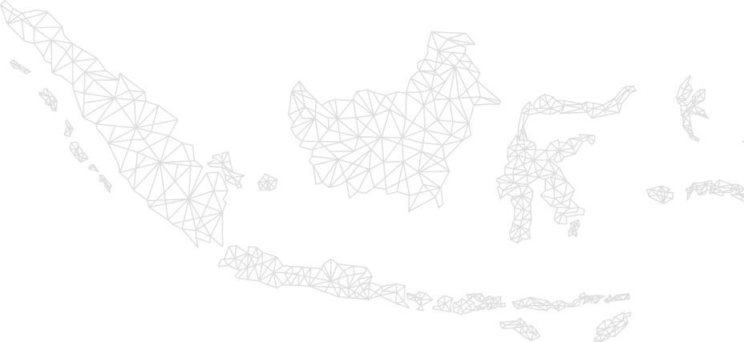

KABAR POLRI

Harapan Besar POLRI Menuju Intitusi Berprestasi
Berbagai apresiasi dari berbagai kalangan datang silih berganti di Petingatan HUT Polri
10 Agustus 2022
Komitmen POLRI Untuk Mengawal Pertumbuhan Ekonomi
Kapolri Jenderal Polisi Drs. Listyo Sigit Prabowo, M.Si., menegaskan Polri akan terus mengawal seluruh kebijakan Pemerintah hingga mendorong pemasukan atau peningkatan anggaran APBN.
10 Agustus 2022
Digitalisasi POLRI Tingkatkan Pelayanan Masyarakat
Transformasi Polri berlandas konsep Presisi yang diusung Kapolri memang mengandalkan teknologi informasi.
10 Agustus 2022

“POLWAN GOES TO SCHOOL” Dalam Rangka Sambut Hari POLWAN Ke-74
Polwan Polda Bangka Belitung menggelar kegiatan “Polwan Goes To School” ke beberapa SMA dan SMK yang ada di Pangkalpinang, Senin, beberapa sekolah yang dikunjungi yakni SMA Negeri 1, SMA Negeri 2, SMA Negeri 3, SMA Negeri 4, SMKN 4 Pelayaran
dan SMK PGRI Pangkalpinang pada Bulan Agustus 2022.
10 Agustus 2022

Berhasil Bongkar Jaringan Narkoba Hingga 30,8 Miliar, Polisi Selamatkan 88 Ribu Jiwa
Polres Metro Jakarta Pusat kembali menangkap pengedar sabu dari pengembangan kasus narkoba di Kota Medan, Sumatera Utara.
31 Juli 2022

Berhasil Ungkap Kasus Mafia Tanah, DPR RI Apresiasi POLRI
Keberhasilan Polri dalam keterlibatan di berbagai satgas memantik pemerintah untuk menugaskan mereka menangani beberapa persoalan. Diantaranya mafia tanah dan masalah pangan.
31 Juli 2022

Ketua DPR RI Sematkan Apresiasi Pada Polri Atas Pembentukan Direktorat PPA
Ketua DPR RI, Puan Maharani mengapresiasi Polri yang membentuk Direktorat PPA. Direktorat ini didirikan di Bareskrim Polri, Polda, dan Polres. Menurutnya, Direktorat PPA sejalan dengan langkah dari Polri yang mengedapankan restorative justice untuk kestabilan
keamanan nasional.
31 Juli 2022
Tepati Komitmen Terhadap Polwan, Anggota Komisi III DPR RI Beri Pujian Pada KAPOLRI
Kapolri, Jenderal Polisi Drs. Listyo Sigit Prabowo, M.Si., dinilai menepati komitmen yang disampaikannya saat fit and proper test calon Kapolri setahun lalu. Yakni, mendorong pengembangan karier polisi wanita (polwan).
31 Juli 2022

Empat Pilar Transformasi Sebagai Jantung POLRI Yang PRESISI
Kepolisian Negara Republik Indonesia (Polri) Presisi merupakan akronim dari Prediktif, Responsibilitas, Transparansi-Berkeadilan. Dalam konsep Polri Presisi mempunyai empat pilar kebijakan, 16 program prioritas, 51 kegiatan, 177 rencana aksi, dan 8 komitmen.
Adanya empat Pilar Transformasi membuat organisasi menjadi lebih baik.
31 Juli 2022